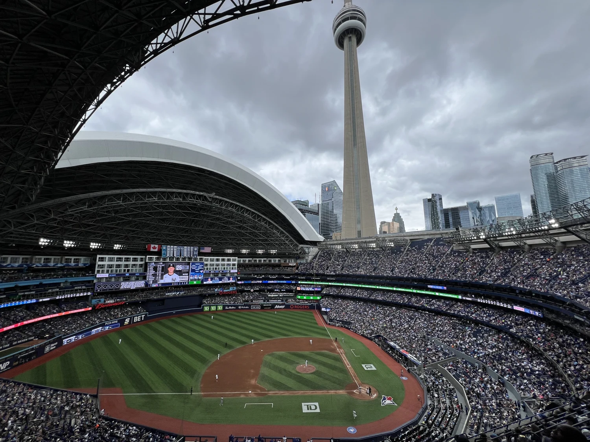

스포츠 데이터 분석
규칙이 관중을
불렀는가?
MLB가 규칙을 바꾼 2023년, 경기당 관중이 늘어난 구단은 몇 곳일까? 같은 30개 구단도 어느 시즌과 비교하느냐에 따라 답이 달라졌다.
- 2022년 대비
- 26개 구단
- 2019년 대비
- 15개 구단
이규돈 · 데이터 분석 포트폴리오

스포츠 데이터 분석
MLB가 규칙을 바꾼 2023년, 경기당 관중이 늘어난 구단은 몇 곳일까? 같은 30개 구단도 어느 시즌과 비교하느냐에 따라 답이 달라졌다.
Python, pandas, SciPy, statsmodels, Matplotlib